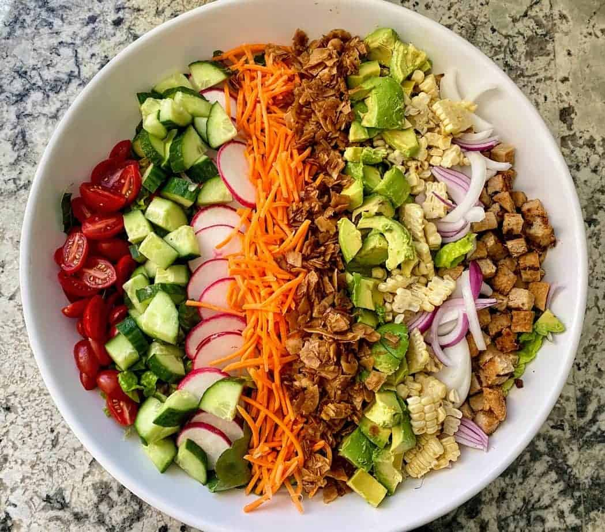

A vegan cobb salad is a twist on the classic cobb salad, which typically contains meat, eggs, and dairy products. This plant-based version is made entirely from vegan ingredients and is packed with nutrients and flavor. The salad typically includes a base of mixed greens, such as romaine lettuce or baby spinach, and is topped with a variety of colorful veggies such as diced tomatoes, avocado, cucumber, and shredded carrots.